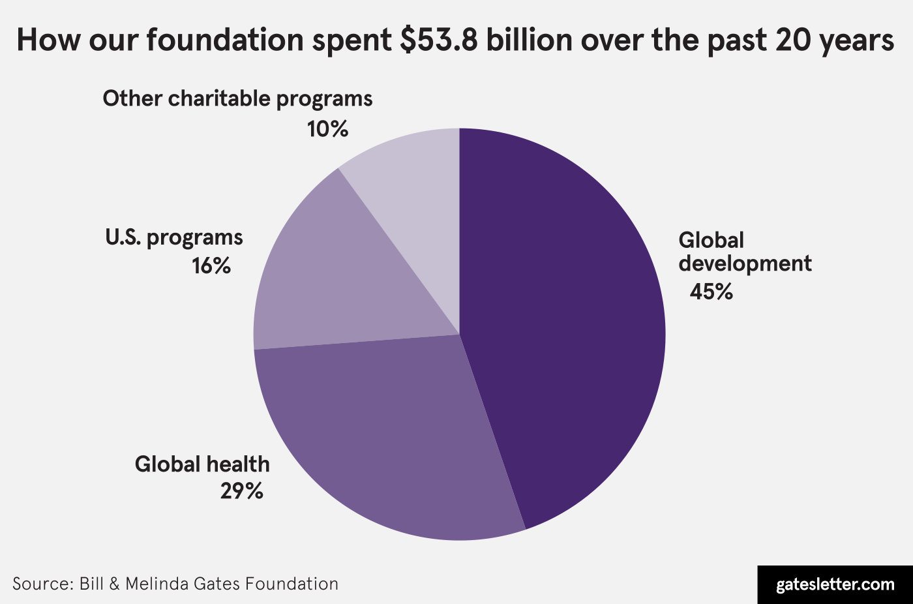
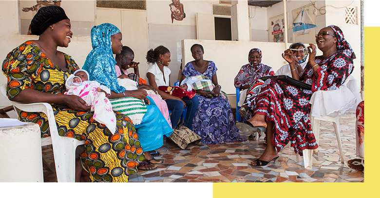
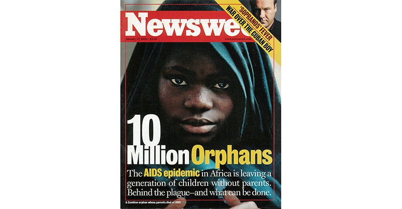
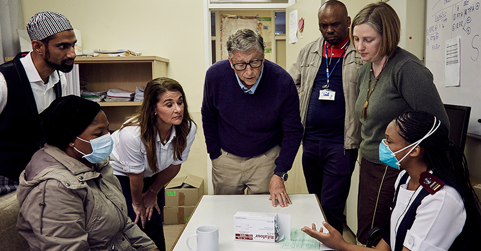
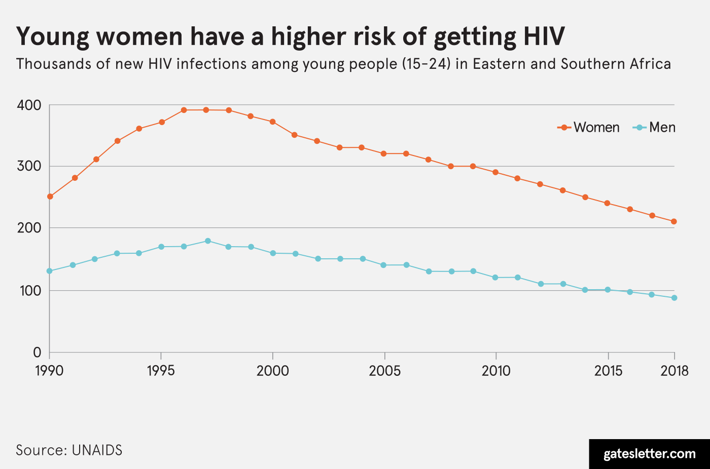

When we started our foundation 20 years ago, the world was, in many ways, very different from the one we live in now. It was before 9/11, before the Great Recession, and before the rise of social media.
Then, as now, there was no shortage of worthy causes, and there was a good argument to be made for investing in many of them. We’d known for a while that we wanted to give away the majority of our wealth from Microsoft and use it to make people’s lives better. The challenge, of course, was how to do that in a meaningful and high-impact way.
As we were thinking about what our philanthropic priorities would be, we spent a lot of time meeting with experts and poring over reports. What we learned convinced us that the world should be doing more to address the needs of its poorest people. At the core of our foundation’s work is the idea that every person deserves the chance to live a healthy and productive life. Twenty years later, despite how much things have changed, that is still our most important driving principle.
“At the core of our foundation’s work is the idea that every person deserves the chance to live a healthy and productive life.”
There is no question that this new decade is beginning at a time of tremendous unrest and uncertainty around the world. But even in a moment as challenging as this one—in fact, especially in a moment like this one—we remain committed to supporting advocates, researchers, government officials, and frontline workers who are making a healthy and productive life possible for more people in more places.
For the last 20 years, our foundation has focused on improving health around the world and strengthening the public education system in the United States because we believe that health and education are key to a healthier, better, and more equal world. Disease is both a symptom and a cause of inequality, while public education is a driver of equality.
We know that philanthropy can never—and should never—take the place of governments or the private sector. We do believe it has a unique role to play in driving progress, though.
At its best, philanthropy takes risks that governments can’t and corporations won’t. Governments need to focus most of their resources on scaling proven solutions.
Businesses have fiduciary responsibilities to their shareholders. But foundations like ours have the freedom to test out ideas that might not otherwise get tried, some of which may lead to breakthroughs.
As always, Warren Buffett—a dear friend and longtime source of great advice—put it a little more colorfully. When he donated the bulk of his fortune to our foundation and joined us as a partner in its work, he urged us to “swing for the fences.”
That’s a phrase many Americans will recognize from baseball. When you swing for the fences, you’re putting every ounce of strength into hitting the ball as far as possible. You know that your bat might miss the ball entirely—but that if you succeed in making contact, the rewards can be huge.
That’s how we think about our philanthropy, too. The goal isn’t just incremental progress. It’s to put the full force of our efforts and resources behind the big bets that, if successful, will save and improve lives.
To be clear, the risks we take are different from the ones the true heroes of global progress take all the time: the health workers who brave war zones to get vaccines to children who need them, the teachers who sign up to work in the most challenging schools, the women in the world’s poorest places who stand up against cultural norms and traditions designed to keep them down. What they do requires personal sacrifices we never have to make—and we try to honor them by supporting innovations that might one day make their lives easier.
Altogether, our foundation has spent $53.8 billion over the last 20 years. On the whole, we’re thrilled with what it’s accomplished. But has every dollar we’ve spent had the effect we’ve hoped for? No. We’ve had our share of disappointments, setbacks, and surprises. We think it’s important to be transparent about our failures as well as our successes—and it’s important to share what we’ve learned.
In this year’s letter, we write about the work we’ve done on health and education and why we think the risks we’ve taken have set us up for future progress. We also write about two issues that have emerged as priorities for us—the climate crisis and gender equality—and how they will factor into our next 20 years.
Some of the very first investments we made as philanthropists were aimed at correcting inequities in global health. So, we’ll begin this letter there, too.
>Melinda: When we first started working in global health, we were shocked to learn how many children in low-income countries were still dying from diseases that could have been prevented with vaccines that were widely available in countries like the U.S. It drove home for us that the challenges of poverty and disease are always connected.
Since this wasn’t something that markets and governments were solving on their own, we saw an opportunity for philanthropic dollars to help. We worked with the World Health Organization, the World Bank, and UNICEF to create Gavi, the Vaccine Alliance. Gavi brings together governments and other organizations to raise funds to buy vaccines and support low-income countries as they deliver them to children.
Bill: After World War II, the world came together to create a series of international organizations aimed at increasing economic and military cooperation among nations, including the UN, WHO, and NATO. Gavi was a chance to drive similar cooperation around getting vaccines to kids.
We weren’t entirely sure what to expect. Thanks to Microsoft, I was familiar with the risks of starting a new organization. The risks we were taking with Gavi were different, though. Instead of trying to introduce a new product and appeal to customers, we were trying to prove to the world that an international partnership for vaccines was not only possible but necessary. If we failed, we could discourage governments and other funders from investing in future efforts.
There were so many questions. Could we really raise enough money to convince manufacturers to supply vaccines that developing countries could afford? And even if we did, could we get countries to take on the difficult task of getting new and underused vaccines out there to children?
The answers to both questions turned out to be a resounding yes. By 2019, Gavi had helped vaccinate more than 760 million children and prevent 13 million deaths. It has also succeeded in bringing more vaccines and supplies into the market while lowering prices. For example, a single dose of the pentavalent vaccine, which protects against five deadly infections, used to cost $3.65. It now costs less than a dollar.
Melinda: Today, 86 percent of children around the world receive basic immunizations. That’s more than ever before. But reaching the last 14 percent is going to be much harder than reaching the first 86 percent. The children in this group are some of the most marginalized children in the world.
Some of them live in fragile states where conflict prevents the health system from working well for anyone. Others live in remote rural areas. Frustratingly, some live just a few hundred meters from a health facility but are invisible to the health system. (Picture, for example, the child of recent migrants living in overcrowded, impoverished areas of Nairobi or Rio de Janeiro.) Gavi is now increasingly focused on working with countries to take a more targeted approach to the districts where unvaccinated children are concentrated.
“We think going big on Gavi was one of the best decisions we’ve ever made—and we’re thrilled with the return we’ve seen on our investment.”
As Gavi raises funds for its next five years of work, we want to encourage more donors to commit to extending this incredible success story to all children. More funding will allow Gavi to save more lives. We think going big on Gavi was one of the best decisions we’ve ever made—and we’re thrilled with the return we’ve seen on our investment.
Bill: Our work on vaccines has parallels with another area we’ve been heavily involved with since the beginning: HIV and AIDS.
When our foundation opened its doors, the AIDS death rate in the rich world had finally started going down, thanks to new treatments. But as with vaccines, the tools that were saving lives in high-income countries weren’t available in low-income countries. The number of new infections in sub-Saharan Africa was skyrocketing. I remember reading a horrifying Newsweek article about how the virus would turn an entire generation of children into orphans.
In response to the growing epidemic—as well as the need to address two other big killers—in 2002 we helped support the creation of a new organization called the Global Fund to Fight AIDS, Tuberculosis, and Malaria. It had a similar goal to Gavi’s: to deliver medicines, technologies, and programs that save lives in low-income countries. It was also risky for all the same reasons.
But just like Gavi, the Global Fund has proven to be a tremendous success. In 2018 alone, nearly 19 million people received lifesaving HIV treatment in countries where the organization invests.
Once the Global Fund was established, we knew the world had a pipeline to get new innovations out to the places that needed them the most. So, along with supporting the Global Fund, our foundation invested in the development of new tools.
In the beginning, we put a lot of resources into HIV preventatives that needed to be taken every day. For a lot of reasons, those didn’t turn out as we hoped.
For example, we were optimistic that vaginal gels could help prevent infection, but they weren’t effective at stopping transmission of the disease. And while there is now a daily preventative pill that is 99 percent effective at protecting against the disease if taken consistently, it hasn’t made a real dent in the epidemic in low- and middle-income countries. Local health programs have struggled to deliver a daily pill in a way that’s appealing and fits into people’s lives.
Today we’re focused on longer-lasting preventatives. Imagine if, instead of having to take a pill every day, a person could get one injection every other month, an implant in his or her arm, or even a vaccine to entirely remove the risk of getting the virus.
Our foundation is also focused on longer-lasting treatment options. Thanks to major advances, an HIV-positive person receiving treatment now has the same expected lifespan as someone without HIV. But, just like with today’s preventatives, the medication has to be taken every day. We’re looking for new treatments that can be taken less frequently, as much as a year apart.
Even if we perfect long-lasting options, there are still a number of challenges to tackle before we truly reverse the course of the epidemic.
Melinda: In 2003, we visited an HIV clinic in Botswana that, at the time, was one of the biggest HIV clinics on the continent. We’ll always remember that trip as a sobering lesson about the social and structural drivers of the disease.
We spent time with a Dutch doctor who told us about a local Botswanan woman he and his wife had employed in their home. One day, the woman told them she was going to her village for a visit—and she never came back. When the concerned couple went looking for her, they were shocked to learn she had died of AIDS.
It wasn’t the fact that she had AIDS that shocked them. It was the fact that she died without seeking treatment, even though she had a personal connection to the clinic and would have had access to the best care available. But that’s how devastating the stigma surrounding AIDS was. It could literally be deadly.
That story has stayed with us. And by complicating our understanding of the epidemic, it clarified our call to action.
The reality is that in the fight against HIV, biomedical interventions alone will never be enough. Our response also needs to reflect what matters to people, what’s keeping them from seeking prevention and treatment services, and why the tools that prove effective in clinical trials don’t always make a difference in the context of their everyday lives.
We know, for example, that across southern and eastern Africa, adolescent girls and young women account for a disproportionate number of new HIV infections. Poverty, violence, and gender norms all play a role in why.
But for all that we do know about these girls, there’s a lot we don’t. We know how their lives look through our eyes. We don’t have a lot of data about what the world looks like through theirs. And that hampers our ability to develop effective solutions for them—biomedical and otherwise.
Fortunately, the research is starting to catch up to this reality. When I was in Johannesburg last October, I spent time with a foundation partner that is working to close this data gap and engage adolescent girls and young women to co-design treatment and prevention services that will better meet their needs.
Our foundation has also partnered with a U.S. government-backed program called DREAMS, an acronym for Determined Resilient Empowered AIDS-Free Mentored and Safe. As the name suggests, the program takes a broad approach to HIV prevention. It also addresses, for example, financial literacy, entrepreneurship, and ending gender-based violence—all of which can help women and girls live healthy, thriving, and HIV-free lives.
Over the last 20 years, science has made incredible advances against HIV. Crucially, the world’s understanding of how to deploy that science is moving forward, too.
Bill: Global health will always be a core focus of our foundation. This work will only become more important in the future, as climate change makes more people susceptible to disease. (I’ll have a bit more to say about this later in the letter.)
Along with our investments in vaccines and HIV, we will continue to support progress on other diseases, like malaria, tuberculosis, and polio (through our partnership with the Global Polio Eradication Initiative). We’ll fund new advances in family planning and maternal and newborn health, and we’ll explore new ways of preventing the scourge of malnutrition.
“As people become healthier, their lives improve in other ways. And the world becomes better and more equal as a result.”
That’s because improvements in health are key to lifting people out of poverty. As people become healthier, their lives improve in other ways. And the world becomes better and more equal as a result.